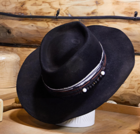

[ЗАГЛУШКА] Тимчасова домашня сторінка для перегляду заставки.

Kopytsia
Перше відкриття у вкладці показує заставку, якщо сторінка ще вантажиться. Щоб побачити її знову при перезавантаженні, натисніть «Повторити заставку» або відкрийте нову вкладку.